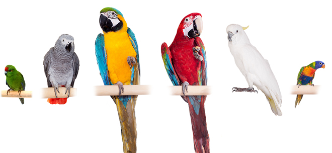

Попугаи
Это очень яркие и красивые пернатые. Их оперение окрашено в зелёные, красные, жёлтые, синие, голубые, фиолетовые, чёрные, белые и другие тона и представляет собой всевозможные их сочетания. Кроме того, эти птицы необычайно умны и славятся тем, что у них хорошо развиты память и способность к звукоподражанию. Полушария головного мозга у попугаев крупнее, чем у других пернатых, поэтому и неудивительно, что они такие сообразительные.

Виды попугаев
Волнистые попугаи
Неразлучники
Розеллы
Интересные факты о попугаях
- У попугаев отлично развито чувство ритма — они могут действительно ритмично танцевать под музыку.
- Около трети всех видов попугаев в настоящее время находится под угрозой вымирания из-за человеческой деятельности и браконьерства.
- В Австралии существуют специальные школы для попугаев, где этих птиц учат разговаривать.
- У попугаев отсутствуют голосовые связки, поэтому все звуки они производят с помощью языка и клюва.
- Стаи попугаев в дикой природе могут быть огромными. Самая крупная стая, когда-либо обнаруженная, насчитывала около 70 тысяч птиц!
- В поисках еды попугаи какаду могут за сутки пролетать более семисот километров.
Хотите узнать больше?
Ведь попугаи бывают разных видов и окрасов.